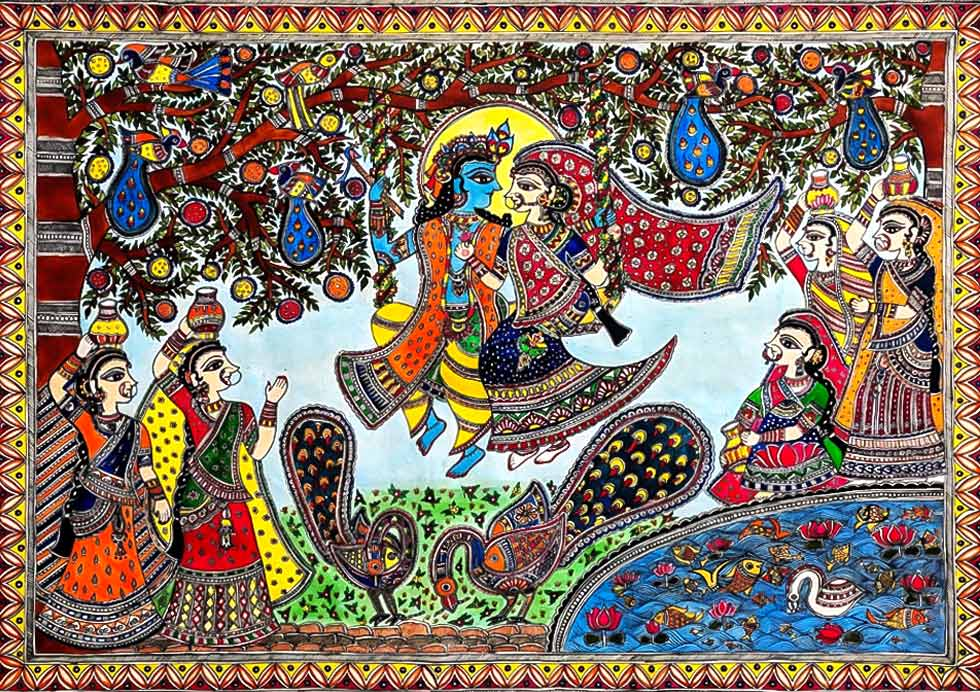

Madhubani painting feels like emotion turned into pattern. Every inch of the canvas is alive—filled with flowers, animals, gods, and intricate lines that seem to pulse with energy. There is no emptiness, no silence—only celebration, devotion, and storytelling. The romance here is vibrant and expressive. Whether it’s Radha and Krishna, a wedding scene, or nature motifs like fish and peacocks, everything speaks of love, fertility, harmony, and connection. It feels almost like the artist is trying to capture the entire universe in one frame—overflowing, colorful, and deeply symbolic.
Madhubani art originates from the Mithila region of Bihar (hence also called Mithila art). • Traditionally painted by women on walls and floors of homes • Closely linked to rituals like marriages and festivals • According to legend, it began during the wedding of Rama and Sita, when King Janaka asked artists to decorate the kingdom It remained a folk tradition for centuries until the 1960s, when it was discovered and promoted as a commercial art form, bringing global recognition.
Madhubani is instantly recognizable because of its distinct visual language: • No Empty Space (Horror Vacui) Every part of the painting is filled with patterns, lines, or motifs • Double-Line Borders Figures are outlined with double lines, often filled with tiny patterns • Natural Colors (Traditionally) • Black → soot • Yellow → turmeric • Red → kusum flower • Green → leaves • Flat Perspective No shading or 3D—everything appears flat but highly decorative • Symbolism • Fish → fertility and prosperity • Lotus → purity • Peacock → love and beauty •Sun & Moon → cosmic balance
Madhubani art is a community-driven tradition, mainly practiced by women of the Mithila region. However, some artists brought it global recognition: • Sita Devi – known for bold colors and international exhibitions • Ganga Devi – introduced new themes and took the art worldwide Traditionally, the art was passed down from mother to daughter, making it not just an art form but a living cultural heritage.